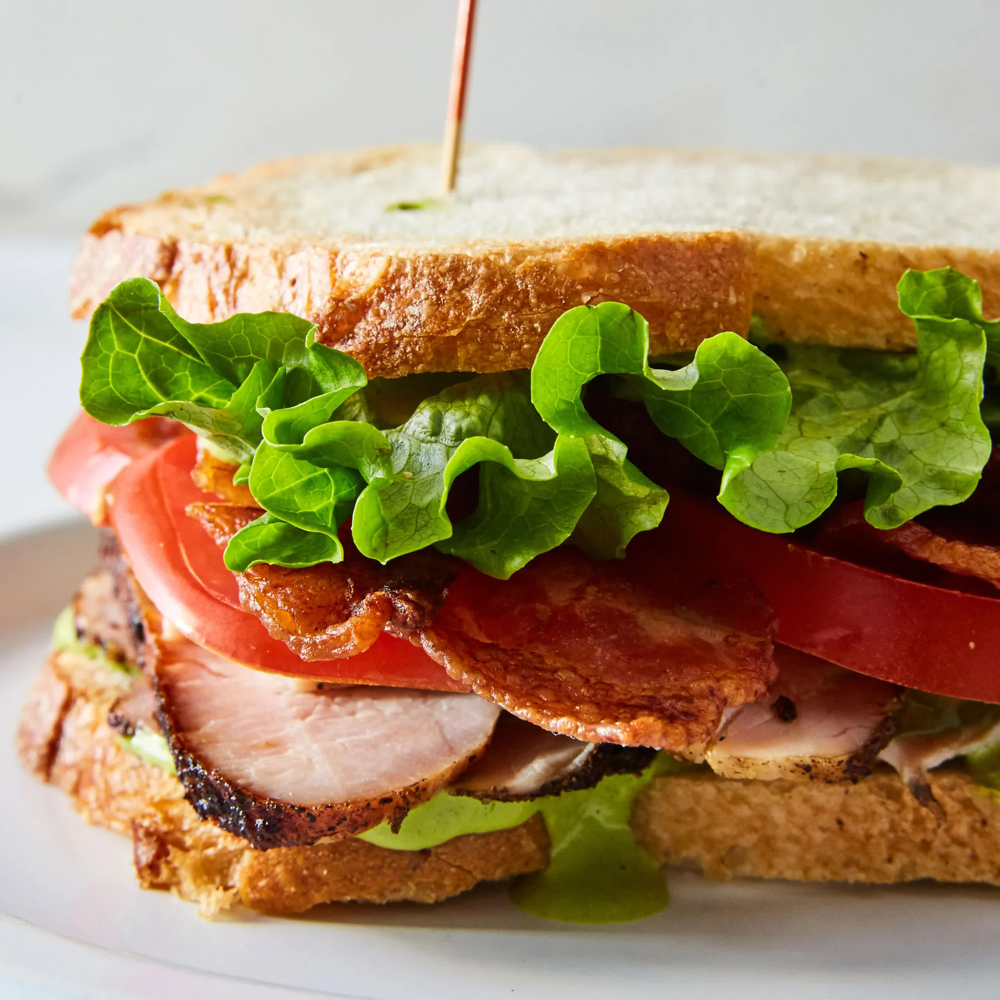

Turkey Sandwich

Description
The Turkey Sandwich is my #1 comfort food choice to fill me up and get me going for any situation. This recipe will show you how I make the Turkey Sandwich but keep in mind that a lot of the ingredients are able to be removed or swapped with prefference. This recipe will use youre choice of bread, turkey, lettuce, cheese, tomato, bacon and mayo.
Ingredients
Instructions
Prepare a pan for 2 slices of bacon, cook on medium heat.
Get turkey, lettuce, bread, mayo, and tomato, set on counter.
Cut tomato into slices.
Wash and prep 3 leafs of romaine lettuce.
Apply mayo to bread
Put 3 slices of turkey on bread.
Put cheese slice on turkey.
Put bacon on cheese.
Put lettuce on bacon
Put tomato on lettuce.
Apply top bread
Enjoy!